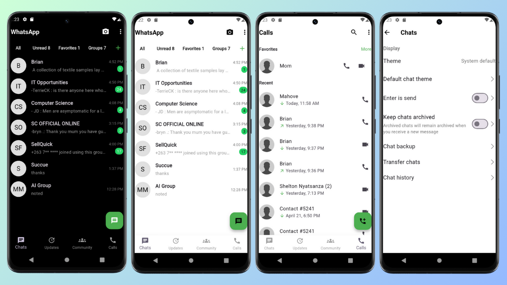

WhatsApp Clone
A Flutter-Based Messaging App

Project Overview
This WhatsApp Clone is a cross-platform mobile application built with Flutter. It replicates core messaging features of the original WhatsApp including real-time chat, voice and video calls, media sharing, and group conversations. The app is designed with clean UI and uses Firebase for backend services.
Key Features:
- 💬 Real-time Messaging with instant delivery
- 📠Voice & Video Calls using WebRTC
- 🖼️ Media Sharing (images, videos, documents)
- 👥 Group Chats with multiple participants
- 🔠User Authentication via Firebase
- 📸 Status Updates with photo and video stories
- ⚙️ Settings page for account and privacy management
Technologies Used:
Flutter, Dart, Firebase (Auth, Firestore, Storage), WebRTC, REST API, Push Notifications